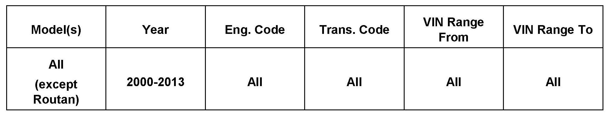
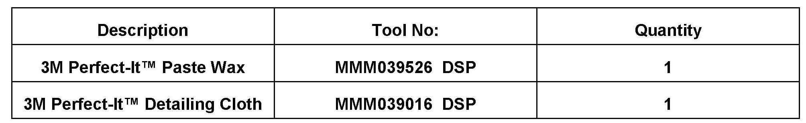

Paint - Swirl Mark/Fine Scratch Removal
50 12 05October 25, 2012
2014370 Supersedes TB V500802 dated August 28, 2008 to include additional model year applicability.

Vehicle Information
Condition
Paint Finish, Reducing Swirl Marks and Fine Scratches
New vehicles (prior to Retail Delivery) with swirl marks and or fine scratches from polishing or cleaning.
Technical Background
Not applicable.
Production Solution
Not applicable.
Service
Finish can be significantly improved without the use of harsh polishing compounds and high speed buffing.
Use the following steps IN SEQUENCE to insure the greatest margin of paint surface improvement:
^ Wash vehicle using a mild automotive detergent.
^ Hand dry vehicle.
Tip:
DO NOT wash or dry vehicle in direct sunlight. Rapid water/soap solution evaporation may form "water spots" on the paint surface.
^ Hand apply 3M Perfect-It Paste Wax (3M Part No. 39526) or equivalent (follow manufacturer instructions regarding use of product).
^ Apply wax to panel sized area (door, fender etc.) using a firm circular motion.
After wax dries to a hazy finish:
^ Polish by hand using a 3M Perfect-It Detailing Cloth (3M Part No. 39016) or a clean dry terry cloth towel.
Warranty
Information only.

Required Parts and Tools
No special tools required.
Additional Information
All part and service references provided in this Technical Bulletin are subject to change and/or removal.
Always check with your Parts Dept. and Repair Manuals for the latest information.